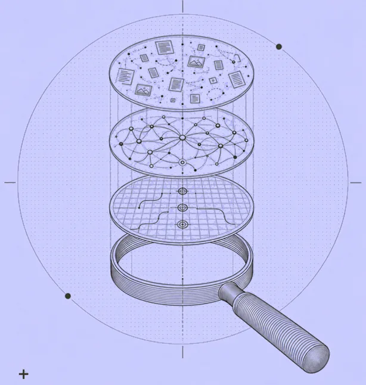
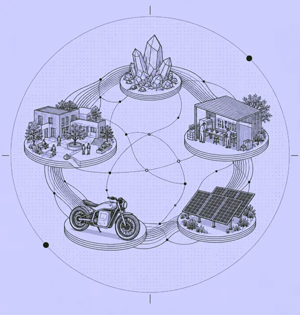

OSINT in the Age of AI: Tradecraft at a Turning Point
Olena ShumskaThis piece is born out of the author’s deep engagement with London’s OSINT community and a desire to help the tradecraft reach its full potential in the age of AI.
A selection of our research insights and policy recommendations addressing the critical intersections of artificial intelligence and society.
4 PUBLICATIONS

This piece is born out of the author’s deep engagement with London’s OSINT community and a desire to help the tradecraft reach its full potential in the age of AI.
Looking at proposed Russian legislation to regulate AI, this piece argues that the state's need for isolation and control will ultimately outweigh the needs of businesses.
Drawing on the academic literature on digital authoritarianism, AI-tocracy, and state legibility, this essay argues that AI may normalize authoritarian control through administration rather than only intensify spectacular repression.

Drawing from personal fieldwork experiences, the author argues AI could help close the Global South–Global North gap instead of widening it.
Try a different search, or explore all of our research.

Olena brings seven years of experience in policy analysis and open-source intelligence, spanning areas such as illicit weapons trafficking, financial crime, public safety, private investigations, and cybersecurity. She was an Emerging Expert with the DC-based Forum on the Arms Trade from 2021 to 2023.
Fascinated by the impact of emerging technology on the nature of war, the essence of security, and its ramifications for intelligence and research work, she decided to start the AI Societal Impact Lab to create a space for discussing what technological advancement might mean for human societies.
Olena is starting her PhD in Sociology at the University of Edinburgh. She also holds Master's degrees in Russian and Eastern European Studies from the University of Oxford and in International History from the Graduate Institute in Geneva.

Jamie recently completed a PhD in area studies at the University of Oxford. His dissertation looked at the socio-economic aspects of the Russian Army. At Oxford, he taught courses on politics and quantitative research methods. Jamie is interested in AI ethics, particularly how its integration into advanced academic research and everyday life raises questions of accountability, transparency, and impact.
Jamie also holds an MPhil in Russian and Eastern European Studies from the University of Oxford.

Mani is a teaching and a research assistant in political science at the University of Toronto. His dissertation looks at the relations between Iran and the Western countries. He is curious about exploring where technology and authoritarian regimes collide, as well as the institutional aspects of AI governance. One of his current research projects engages with the impact of Chinese LLMs in Kazakhstan.
Mani also holds a Master's in Political Science and Government from University of Concordia.

Elodie brings experience on conflict-affected areas, including several years of work in Sub-Saharan Africa. Elodie is drawn to questions around AI and global inequalities, datacolonialism, the impact of AI on labor in 'developing' economies, and how emerging technologies are reshaping humanitarian work. She also runs her own Switzerland-based consulting firm called Target Advisory.
Elodie holds a Master’s in Development Studies from the Graduate Institute in Geneva.